Obsessed with Flexible Sensors,
Backed by Engineering
If robot talks, I make sure it makes sense.
Hi, I am Greywolf, I will be guiding you today

If robot talks, I make sure it makes sense.
Hi, I am Greywolf, I will be guiding you today
Co-authored Prosthetic Exo-Leg: A Functional Robotic Leg Suit to Assist Patients with Transfemoral Amputation, published at IEEE TENCON 2023.
IEEE paperRead on ResearchGateGitHub project
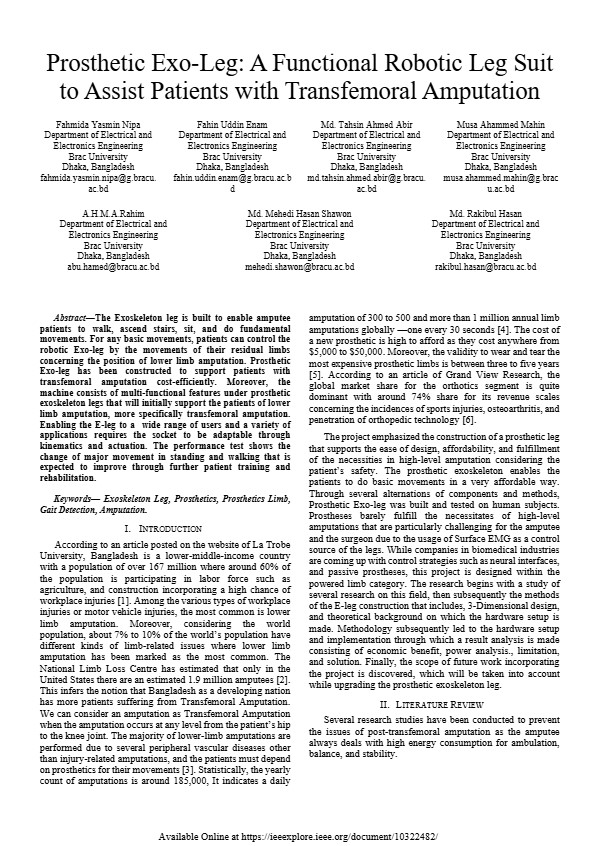
3rd Place as Electronics Team Lead of BRACU Mongol Tori. Led design, testing, and deployment of robotics systems on an international stage.
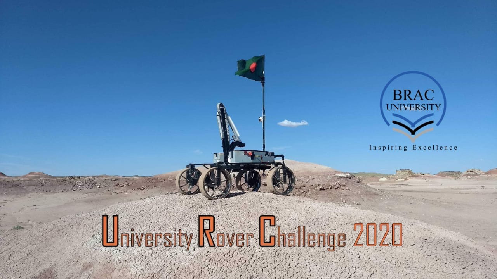
Selected competition record
ICEPE 2022
Prosthetic Exo-Leg
University Rover Challenge
BRACU Mongol Tori · Electronics Team Lead
University Rover Challenge
BRACU Mongol Tori
International Robotics Competition
Led BRACU Expeditor, the only team from Bangladesh to participate, with full funding from OIC.
BRAC University Robotics Competition
Autonomous Science Box
BRAC University Robotics Competition
Team Leader
International Rover Challenge
BRACU Mongol Tori
Founder of CyborgBD, providing cost-efficient AI and automation solutions. Led robotics clubs and competitions with 400–700+ participants, mentoring students and driving innovation.
Robotic exo-Leg for patients with transfemoral amputation. Recipient of the Best Paper Award, IEEE Women in Engineering (WIE), at TENCON 2023.
Published in IEEE TENCON 2023
IEEE paperRead on ResearchGateGitHub project
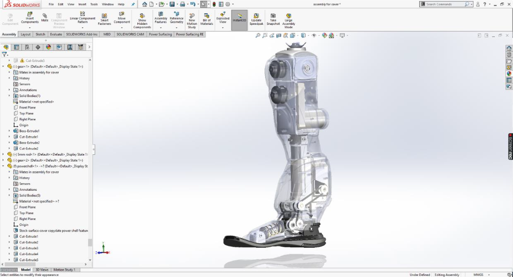
Robotic exo-leg for patients with transfemoral amputation. Recipient of the Best Paper Award, IEEE Women in Engineering (WIE), at TENCON 2023.
IEEE paperRead on ResearchGateGitHub project
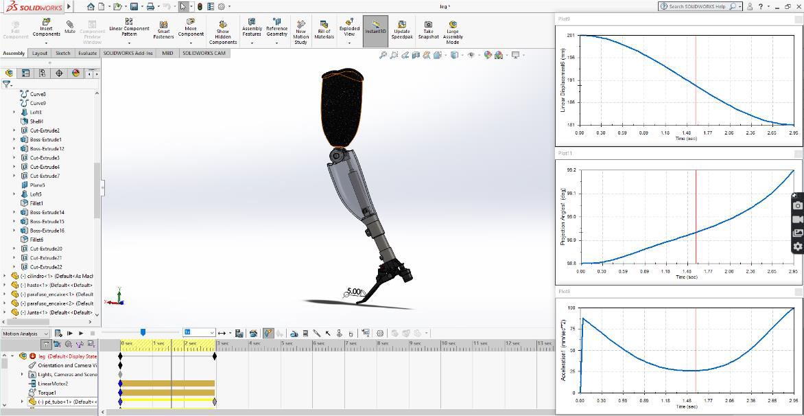
A semi-autonomous rover engineered for extraterrestrial terrain exploration with sensor fusion and robust navigation systems.
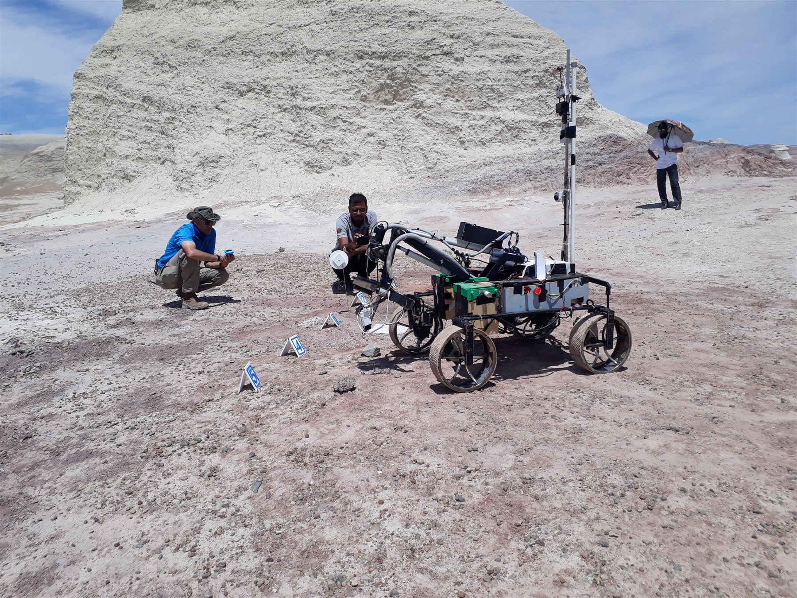
Microcontroller-based landmine detection robot with metal & ultrasonic sensors, LoRa/Bluetooth transmission, GPS tracking, and path mapping. Used in competitions.
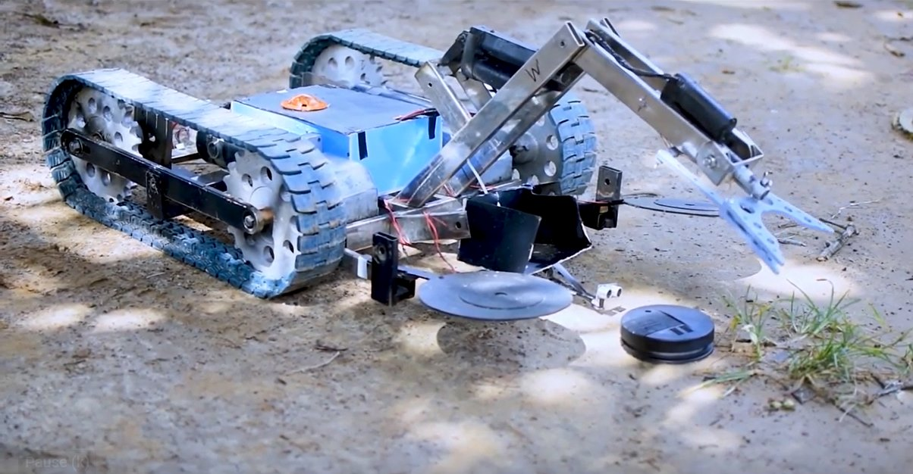
Autonomous box designed to test soil & air for life detection on other planets.
Robotic exo-leg for transfemoral amputees. Published in IEEE TENCON 2023 and awarded Best Paper.

A semi-autonomous rover engineered for extraterrestrial terrain exploration with sensor fusion and robust navigation systems.
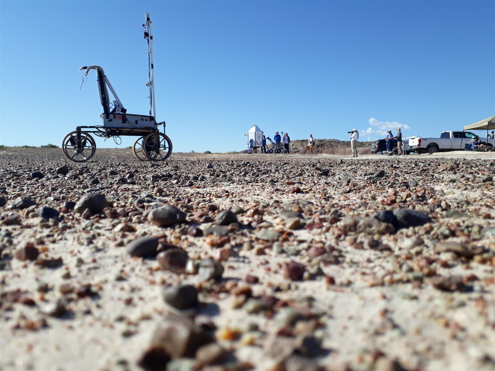
A high-torque combat robot designed with precision control, strategic maneuvering, and resilient mechanical architecture.

Remote-controlled soccer-playing robot with RF based motor controllers. Competed internationally.
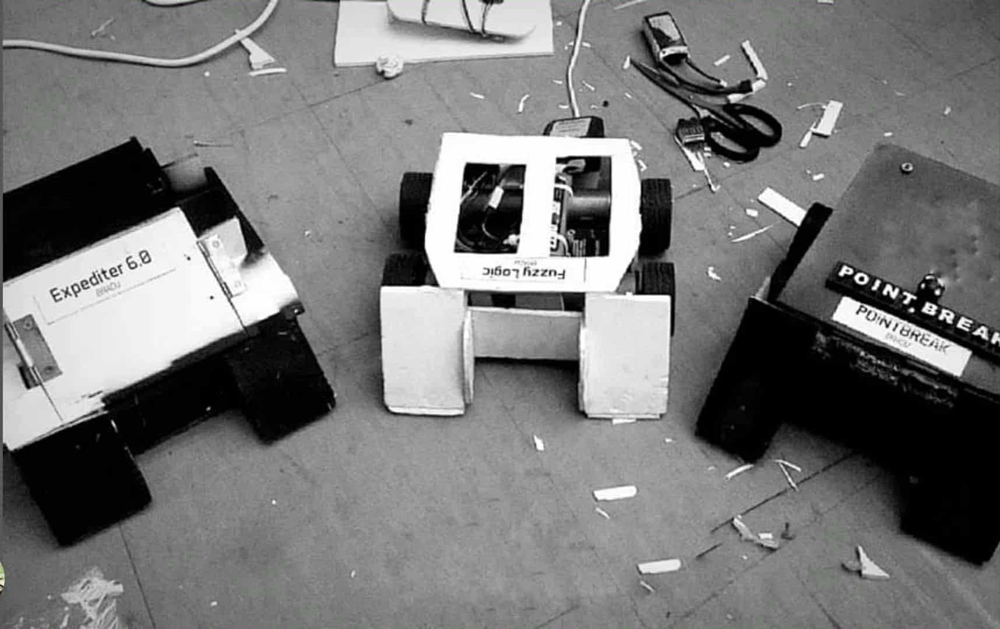
Autonomous box designed to test soil & air for life detection on other planets.
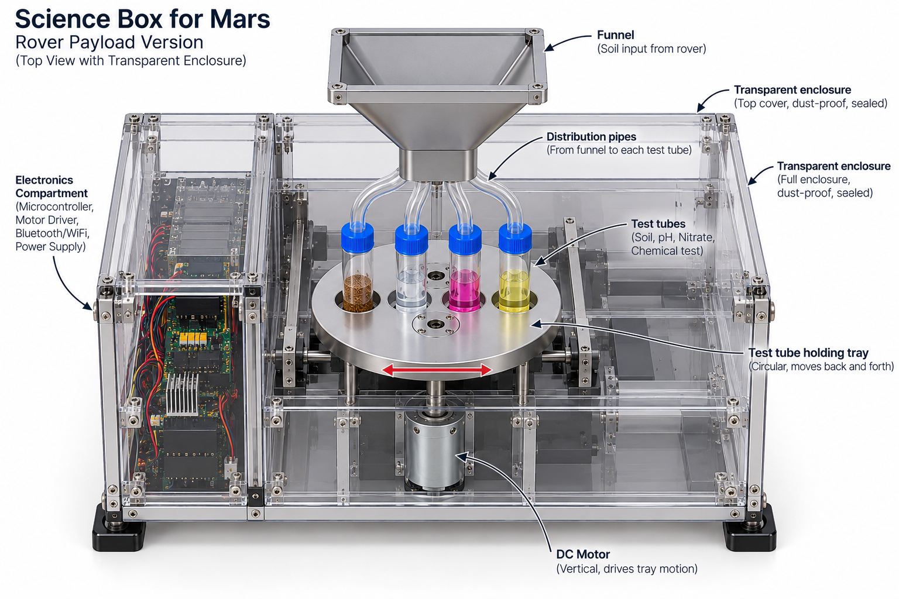
Mini tank robot for delivering supplies in disaster zones and firefighting in unreachable areas.
An intelligent IR-guided robot optimized for real-time path detection, speed control, and adaptive decision-making.
Senior Executive – Directed national robotics competitions (500+ participants) and founded Research & Project Management Dept.
General Secretary – Organized large indoor games tournaments (700+ participants), increasing engagement by 40%.
Cadet Corporal – Trained under Bangladesh Army; received BNCC scholarship for academic excellence.
I am Musa Ahammed Mahin, an Electrical & Electronics Engineering graduate from BRAC University (2018–2023), specializing in robotics, embedded systems, and AI-driven automation.
My research includes the award-winning Prosthetic Exo-Leg presented at IEEE TENCON 2023. Experienced in robotics competitions, IoT systems, and embedded design.
Passionate about flexible sensor, biomedical engineering, robotics, UGV, UAV, and automation technologies.
BU stands first among all Asian universities and it is the only Bangladeshi university to be enlisted with the finals qualifiers in URC 2020
Michigan Mars Rover Team and Stanford Student Robotics of the United States stood first and second with 96 and 94 points respectively in the competition, held annually in the country's southern Utah state.
Brac University (BU) Mongol-Tori rover has been ranked 3rd globally in this years University Rover Challenge (URC) 2020, after first ranked University of Michigan and runners up Stanford University.
The final phase is going to be held at the largest and the most impactful robotics research conference worldwide, the IEEE/RSJ International Conference on Intelligent Robots and Systems (IROS 2019). It is going to take place at The Venetian Macao, Macau, China

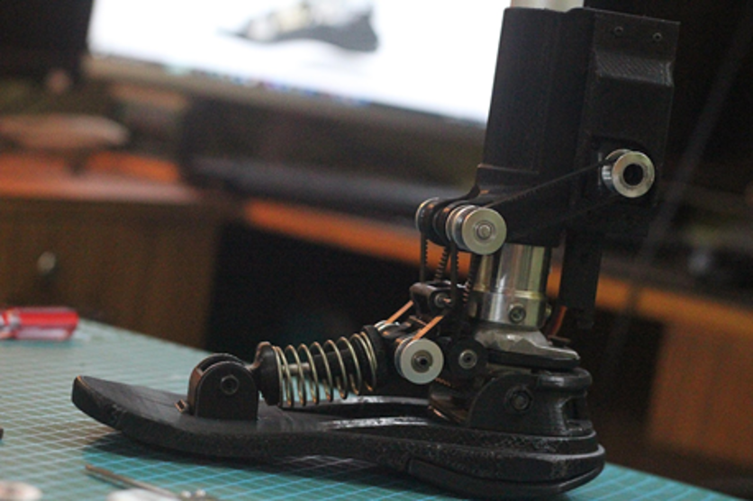


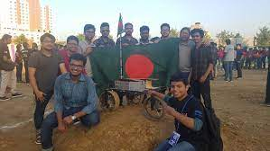

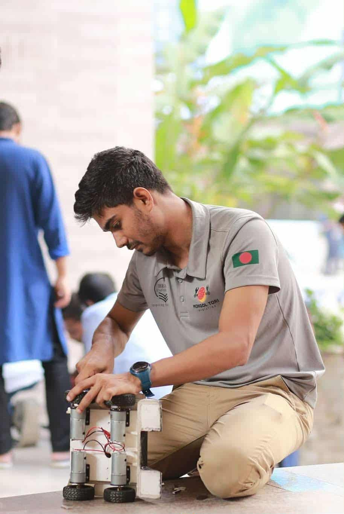
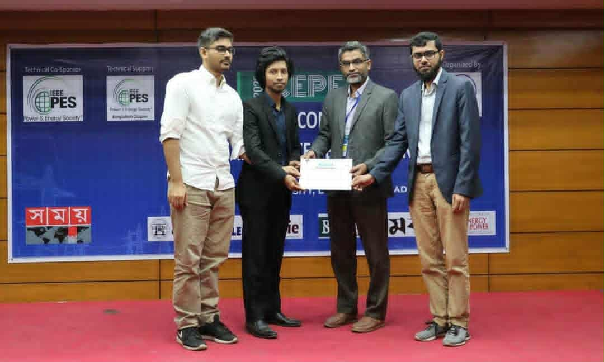

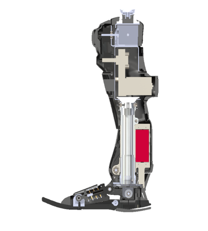
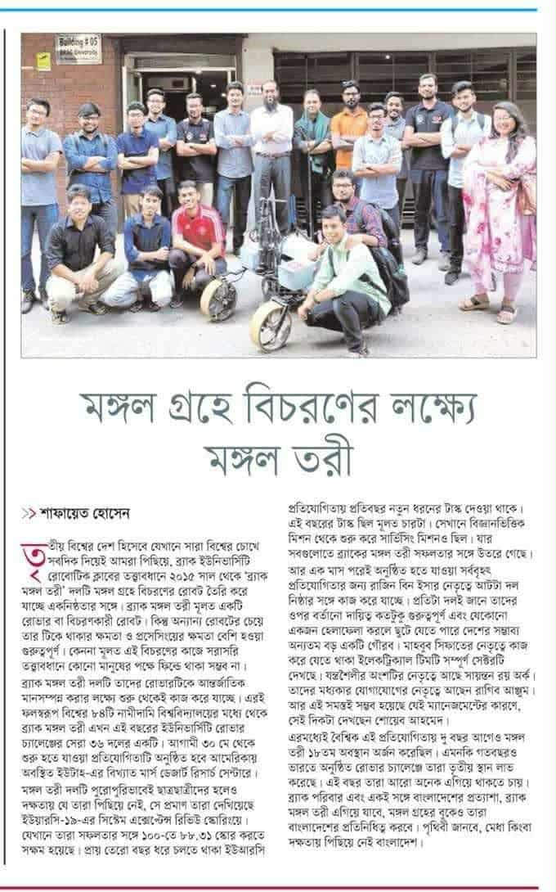
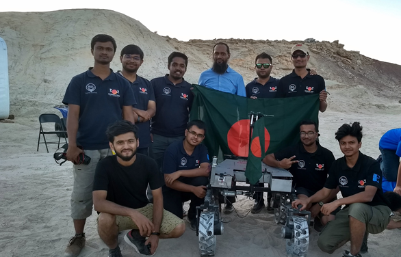
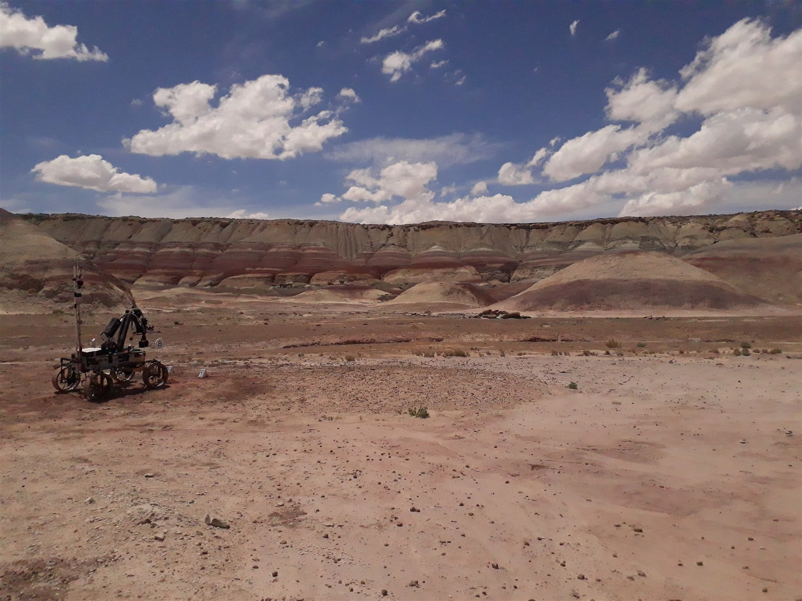
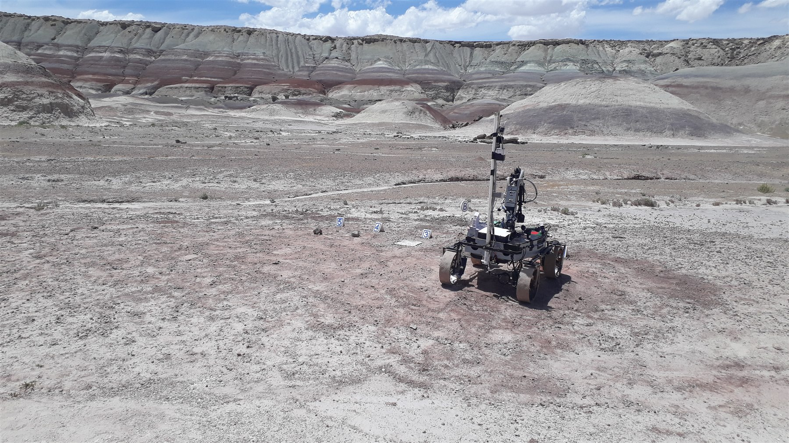
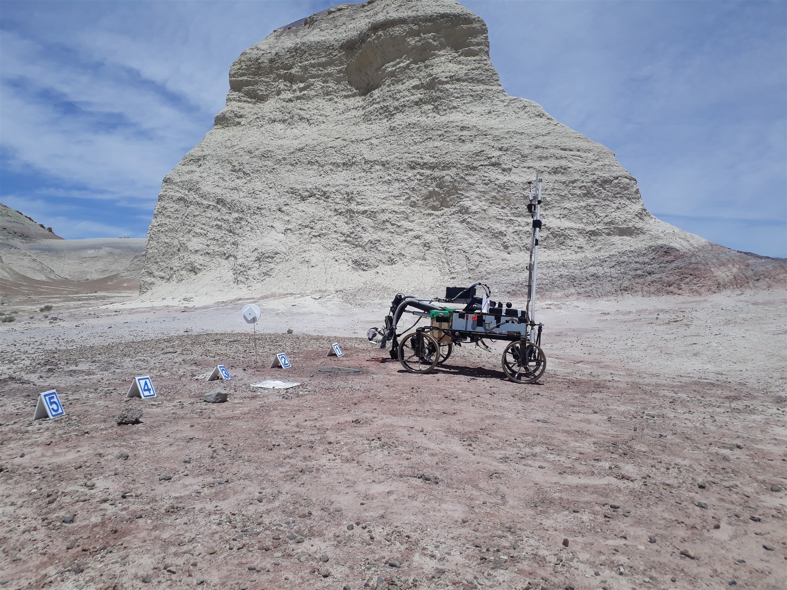